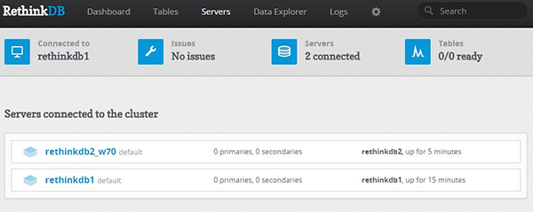
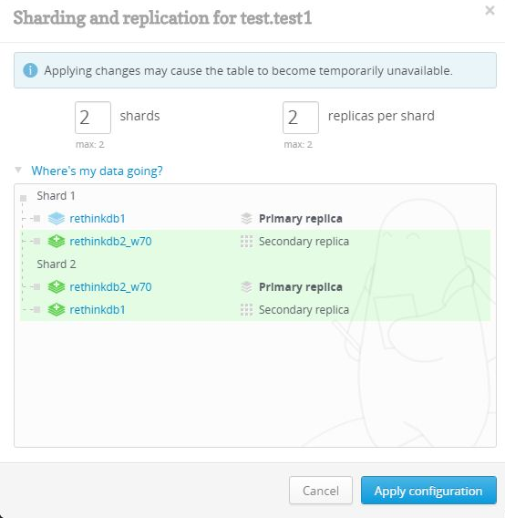

Setting up a sharded RethinkDB cluster on Ubuntu and Debian, NoSQL
Set Up a Sharded RethinkDB Cluster - Ubuntu, Debian
Difficulty: 3
Time: 30 minutes
RethinkDB, a NoSQL database, is the first open-source, scalable JSON database built from the ground up for real-time web applications. It's designed specifically to push data to applications in real time, dramatically reducing the time and effort necessary to build scalable real-time applications. In this article, we'll help you build a RethinkDB cluster, import a database onto it, and make it secure.
For these tasks, you'll need two servers running Ubuntu 14.04 or Debian 7, named rethinkdb_server1 and rethinkdb_server2. For optimal security, set up a sudo user for each RethinkDB server. Before setting up a RethinkDB cluster, you should be aware of installing and configuring RethinkDB cluster on a Ubuntu and Debian server. Please refer Install and Configure RethinkDB - Debian, Ubuntu link.
Set up a RethinkDB node
RethinkDB cluster is a type of peer-to-peer network. The primary step in building a RethinkDB cluster is to install RethinkDB on every server included in this cluster.
- On each server, add the RethinkDB key and repository to
apt-get.
source /etc/lsb-release && echo "deb http://download.rethinkdb.com/apt
$DISTRIB_CODENAME main" | sudo tee /etc/apt/sources.list.d/rethinkdb.list
wget -qO- http://download.rethinkdb.com/apt/pubkey.gpg | sudo apt-key add –
- Update and install RethinkDB.
sudo apt-get update
sudo apt-get install rethinkdb
RethinkDB is installed on the server.
- Configure RethinkDB to run on startup.
sudo cp /etc/rethinkdb/default.conf.sample
/etc/rethinkdb/instances.d/cluster_instance.conf
sudo vi /etc/rethinkdb/instances.d/cluster_instance.conf
- Change the server name as follows:
Search for:
server-name=server
Change it to:
Server-name=rethinkdb_server1
- Set up the bind address.
By default the bind address is accessible only on the localhost (127.0.0.1). Change this address to all to make it listen on all network interfaces.
Search for:
bind=127.0.0.1
Change it to:
Bind=all
- Save the configuration changes.
- Start RethinkDB with a new build configuration.
sudo service rethinkdb start
sudo netstat -tulnp | grep rethindb
The output looks like this:
tcp6 0 0 :::28016 :::* LISTEN 2181/rethinkdb
tcp6 0 0 :::8080 :::* LISTEN 2181/rethinkdb
tcp6 0 0 :::29015 :::* LISTEN 2181/rethinkdb
Secure the RethinkDB cluster
When RethinkDB is configured to listen on all network interfaces (bind=all), it is exposed to outside networks and presents a security threat. To make RethinkDB accessible only from authorized computers, the cluster ports need to be configured. For this, perform the following steps on both the RethinkDB servers.
- Configure the ports for Web Management Console.
sudo iptables -A INPUT -i eth0 -p tcp --dport 8080 -j DROP
sudo iptables -I INPUT -i eth0 -s 127.0.0.1 -p tcp --dport 8080 -j ACCEPT
- Configure the Driver port.
sudo iptables -A INPUT -i eth0 -p tcp --dport 28015 -j DROP
sudo iptables -I INPUT -i eth0 -s 127.0.0.1 -p tcp --dport 28015 -j ACCEPT
- Configure the Cluster port.
sudo iptables -A INPUT -i eth0 -p tcp --dport 29015 -j DROP
sudo iptables -I INPUT -i eth0 -s 127.0.0.1 -p tcp --dport 29015 -j ACCEPT
- Install
iptables-persistent to save the rules.
sudo apt-get install iptables-persistent
- At the prompt, select yes to save ipv4 and ipv6 rules.
Set up a management user
Set up SSH tunnels to access RethinkDB's web management console and the driver interface securely.
- Create a management user for SSH tunnel in rethinkdb_server1 .
sudo adduser sshuser
- Set up the authorized keys file for a new user.
sudo mkdir /home/sshuser/.ssh
sudo touch /home/sshuser/.ssh/authorized_keys
- Import the public key from a local computer, from where you'll access the RethinkDB web management console. You can either copy the public key directly from your computer, or you can use
ssh-copy-id command.
- Copy the user public key.
- Open
authorized_keys for editing.
sudo vi /home/sshuser/.ssh/authorized_keys
- Paste the user public key into this file.
- Repeat the above steps to create rethinkdb_server2 nodes.
Import or create a new database
If you already have a database on this or another server, you need to import those databases into your cluster. If there is no database, RethinkDB automatically creates an empty database by default.
If you don't have an existing database:
- If the database that you want to import is not already present on rethinkdb_server1, then you need to copy it. To do this, locate the path of your current RethinkDB database. (If you used the
rethinkdb command to start your old database, then the directory path rethinkdb_data will be auto-generated.) Use the scp command to copy the path to rethinkdb_server1
sudo scp -rpC user_name@public_ip:/rethinkdb_data/*
/var/lib/rethinkdb/cluster_instance/data
- Restart RethinkDB.
sudo service rethinkdb restart
If you have an existing database:
- Open the configuration file on rethinkdb_server1.
sudo vi /etc/rethinkdb/instances.d/cluster_instance.conf
- Find the path of the RethinkDB database that you want to import. If you used the
rethinkdb command to start your old database, the directory rethinkdb_data will be auto-generated. Add this path into the configuration file.
directory=/home/user/rethink/rethinkdb_data/
- Save the changes.
- Restart RethinkDB.
sudo service rethinkdb restart
Create a cluster
To create a cluster, you need to allow all cluster machines to be accessed through each other’s firewall. The following steps would allow an interaction among different nodes through the firewalls of the server.
- Add an
iptables rule on the rethinkdb_server1 server to allow all other servers to connect to cluster port through firewall.
sudo iptables -I INPUT -i eth0 -s rethinkdb_server1 -p tcp --dport 29015 -j ACCEPT
- Save the firewall changes.
sudo sh -c "iptables-save > /etc/iptables/rules.v4"
- Repeat the same command on the node rethinkdb_server2 by replacing the IP address value.
sudo iptables -I INPUT -i eth0 -s rethinkdb_server2 -p tcp --dport 29015 -j ACCEPT
- Save the firewall changes.
sudo sh -c "iptables-save > /etc/iptables/rules.v4"
- Update the cluster_instance configuration file on the rethinkdb_server2 server, to enable connections with other servers.
sudo vi /etc/rethinkdb/instances.d/cluster_instance.conf
- Locate the join statement in the file.
join=coolexample.com:29015
- Replace it with the IP address of the rethinkdb_server1 server.
join=rethinkdb_server1_IP
- Save the configuration file, and then restart RethinkDB.
sudo service rethinkdb restart
The first node, rethinkdb_server1 does not need a join statement as the other server is joined to rethinkdb_server1.
After completing this step, you have all servers joined to rethinkdb_server1 and have a fully functioning RethinkDB cluster.

Connect to the web management console
The RethinkDB web management console can be used to perform basic functions on RethinkDB such as creating databases and tables, changing basic table settings, and running RethinkDB commands.
Connect to the cluster using Python driver
In this section you'll use a SSH tunnel to establish a connection with the driver port. Because you already have secured the connection to the cluster nodes, no one from outside the network can access the cluster port.
- Create an SSH tunnel from one of the servers (rethinkdb_server2), so that they can establish a secure connection to the cluster port (29018). To do this, perform the following steps in rethinkdb_server2 to generate an SSH key.
ssh-keygen -t rsa
- Copy the public key (
id_rsa.pub) to rethinkdb_server1 server (Cluster Node), and add in authorized_keys.
sudo vi /home/sshuser/.ssh/authorized_keys
- Use SSH tunneling to access the driver port from the sever.
ssh -L 28015:localhost:28015 sshuser@cluster_node_ip -f -N
If you get a "bind: Address already in use error," you can change the port.
Eg: ssh -L 28016:localhost:28015 sshuser@cluster_node_ip -f –N
Install the Python driver and RethinkDB module
- To install the Python driver on the connecting server (
rethinkdb_server2), install the Python virtual environment.
sudo apt-get install python-virtualenv
- Create a directory named
rethink in user home directory.
mkdir rethink
cd rethink
- Create the new virtual environment structure.
virtualenv venv
- Activate the environment before starting Python.
source venv/bin/activate
- Install the RethinkDB module.
pip install rethinkdb
- Start Python from the connecting server.
Python
- Connect to the cluster server database. Make sure to provide the correct port, which you used earlier to connect to the SSH tunnel.
import rethinkdb as r
r.connect("localhost", 28016).repl()
- Create a table table_name.
r.db("table_name").table_create("table_name").run()
- Insert data into the table table_name.
r.db("table_name").table("table_name").insert({"hello":"world"}).run()
r.db("table_name").table("table_name").insert({"This”:”Is”:”world”}).run()
Sharding
RethinkDB allows you to shard and replicate your cluster on a per-table basis. You can control the sharding settings through web management console.
When using the web management console, you can perform sharding simply by specify the number of shards you want and based on the data available, RethinkDB will determine the best split points to maintain balanced shards. To shard your data:
- Go to the table view (Tables → table name).
- Click on the Reconfigure button.
- Set the number of shards and replicas you want.
- Click on the Apply Configuration button.
In addition to the options in web management console, ReQL commands for table configuration allow both scripting capability and replication, distributing replicas for individual tables across user-defined groups of servers using server tags. All these functionalities can be achieved through ReQL command.
There are three primary commands for changing sharding and replication in ReQL:
table_create : Specify initial values of shards and replicas.
reconfigure : Change the values of shards and replicas.
rebalance : Used to rebalance table shards.

Advanced configuration
These include advanced configuration which cannot be performed through the web interface.
Server tag
- All servers in a RethinkDB cluster may be given zero or more tags that can be used in table configurations. This is used to map replicas to servers specified by tags. You can set a tag through the below command:
rethinkdb --server-tag us --server-tag us_west
- If no tags are specified on startup, the server will be started with default tag (default). When servers are tagged, you can use the tags in the reconfigure command:
- If you want to assign three replicas of the user's table to
us_1 and two to us_2, use the following command:
r.table('users').reconfigure(shards=2, replicas={'us_1':3,
'us_2':2}, primary_replica_tag='us_2').run(conn)
Write acknowledgements and durability
Write acknowledgements and write durability are two other settings that can't be configured or managed through the web management console or reconfigure command. They can be configured only by editing table table_config for each individual table.
The write acknowledgement setting for a table controls when the cluster acknowledges a write request as completed. There are two possible settings:
majority: The cluster sends the acknowledgement when the majority of replicas have acknowledged it. This is the default.
single: The cluster sends the acknowledgement when any replica has acknowledged it.
Below is an example:
r.db('rethinkdb').table('table_config').get(
'31c92680-f70c-4a4b-a49e-b238eb12c023').update(
{"write_acks": "single"}).run(conn)
The durability setting for a table controls when writes are committed. They include both hard and soft mode:
- In hard mode, writes are committed to disk before acknowledgements are sent
- In soft mode, writes are acknowledged immediately upon receipt. This is much faster.
Remove a server
Removing a server from the cluster must be performed carefully. When a document is divided over multiple servers, one server always keeps its primary index. If the server holding the primary index of the document is taken offline, then the document is lost. Therefore, before removing a server, you need to migrate all its primary shards away from it.
Here we'll migrate data off the node rethinkdb_server2 to make rethinkdb_server1 the sole node. Then we can remove the rethinkdb_server2 node safely.
- Enter the RethinkDB admin shell on
rethinkdb_server2.
rethinkdb admin
- List the shards (groups of documents) that
rethinkdb_server2 holds.
ls rethinkdb_server2
- Move the shards from one server (
rethinkdb_server2) to another (rethinkdb_server1).
pin shard TABLE SHARD-RANGE --master MACHINE-NAME
Eg : pin shard food.foodshards -inf-+inf --master rethinkdb_server1
- Exit from the admin shell.
Exit
You can safely stop RethinkDB on the server (rethinkdb_server2).
- Execute this command in
rethinkdb_server2:
sudo service rethinkdb stop
- After you remove this server (
rethinkdb_server2), you will receive a warning message when accessing the RethinkDB web management console. On the right-hand side of the message is a Permanent remove button. You can click this button to remove this server (rethinkdb_server2) from the cluster.
Conclusion
In this article, you learned the steps involved in setting up a sharded RethinkDB cluster on Ubuntu and Debian servers.